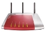

Automount USB-Speicher
Archivierte Anleitung
Dieser Artikel wurde archiviert, da er - oder Teile daraus - nur noch unter einer älteren Ubuntu-Version nutzbar ist. Diese Anleitung wird vom Wiki-Team weder auf Richtigkeit überprüft noch anderweitig gepflegt. Zusätzlich wurde der Artikel für weitere Änderungen gesperrt.
Zum Verständnis dieses Artikels sind folgende Seiten hilfreich:

In diesem Artikel wird beschrieben, wie man einen USB-Speicher, der an einer Fritz!Box angeschlossen ist, automatisch beim Hochfahren des Rechners über WLAN in sein Dateisystem mounten ("einhängen") kann. Innerhalb der Anleitungen werden auch vereinfachte Möglichkeiten für kabelgebundene (LAN) Verbindungen aufgezeigt, die meist unkomplizierter als die WLAN-Verbindungen für das automatische Einbinden sind. Dieser Artikel richtet sich an Anfänger - der Weg 4 ist allerdings eher an Fortgeschrittene gerichtet.
Dieser Artikel wurde mithilfe von Tests an einer Fritz!Box 7270 (Firmware 54.04.88) und 7170 unter GNOME erstellt, sollte aber für alle Modelle funktionieren, die die Möglichkeit anbieten einen USB-Speicher anzuschließen. Für andere Anbieter, wie z.B. die Speedports, Linksys, Asus, Horstbox etc. sollten die Wege ähnlich funktionieren, sind jedoch nicht einfach eins zu eins kopierbar.
Achtung!
Diese Anleitungen funktionieren nur, wenn der USB-Speicher mit einem Dateisystem formatiert ist, welches die Box verarbeiten kann. Welche Box welches Dateisystem unterstützt (meist fat, fat32, ntfs und mittlerweile auch ext2) erfährt man von AVM  . Des Weiteren muss der USB-Fernanschluss deaktiviert sein. Ist der USB-Speicher eine Festplatte, sollte dieser eine eigene Stromversorgung haben (s. Stromversorgung).
. Des Weiteren muss der USB-Fernanschluss deaktiviert sein. Ist der USB-Speicher eine Festplatte, sollte dieser eine eigene Stromversorgung haben (s. Stromversorgung).
Automatisches Einbinden¶
Es gibt mehrere Wege zum automatischen Einbinden:
über den Befehl gvfs-mount
die Datei fstab
die Datei rc.local sowie
über die Konfigurationsdatei interfaces in Verbindung des wpasupplicant
Es gibt sicherlich noch mehr Wege (wie z.B. die Skript-Option des Wicd oder des Dispatcher des NetworkManagers), die hier allerdings nicht weiter erörtert werden.
Vorab die Vor- und Nachteile¶
| Vor- und Nachteile der vier Wege | |||||
| Weg | Vorteile | Nachteile | |||
| Weg 1: gvfs-mount | kein cifs-shutdown-Problem, schnellste Verbindung, sehr einfache Handhabung | Backups nur bedingt möglich, kein Zugriff als root. Für KDE (Kubuntu) aufwändig und nur bedingt geeignet. | |||
| Weg 2: fstab | jede Form von Backups möglich, viele Optionen einstellbar, kein sleep notwendig | langsamer als gvfs-mount | |||
| Weg 3: rc.local | jede Form von Backups möglich, viele Optionen einstellbar | verlängertes Herunterfahren, langsamer als gvfs-mount | |||
| Weg 4: interfaces | kein cifs-shutdown-Problem, kein sleep nötig, sehr viele Optionen einstellbar, jede Form von Backups möglich | händische Konfiguration ohne gui, Nutzung des NetworkManagers nicht möglich, langsamer als gvfs-mount | |||
Hinweis:
Für verschiedene Ubuntuversionen und Hardware kann je ein anderer der Wege am Besten sein. Der Autor hat auf einem Acer Extensa 5220 mit Lucid (64-bit) Weg 1 und 3 für sich als einzig gut funktioniernde Wege befunden.
Installation¶
Benötigte Pakete für Weg 1¶
gvfs-bin
 mit apturl
mit apturl
Paketliste zum Kopieren:
sudo apt-get install gvfs-bin
sudo aptitude install gvfs-bin
Kubuntu, Lubuntu und ältere Versionen von Xubuntu benötigen außerdem ebenfalls für den Weg 1 die Pakete:
gvfs-backends
gvfs-fuse
fuse-utils
mit apturl
Paketliste zum Kopieren:
sudo apt-get install gvfs-backends gvfs-fuse fuse-utils
sudo aptitude install gvfs-backends gvfs-fuse fuse-utils
Weiter zur Methode mittels Weg 1 - gvfs-mount
Benötigtes Paket für Weg 2 und 3¶
Für Weg 2 & Weg 3 muss folgendes Paket installiert [3] sein:
cifs-utils
mit apturl
Paketliste zum Kopieren:
sudo apt-get install cifs-utils
sudo aptitude install cifs-utils
Statt cifs-utils kann bis Ubuntu 12.04 alternativ auch smbfs installiert werden.
Weiter zur Methode Weg 2 - fstab
Weiter zur Methode Weg 3 - rc.local
Benötigte Pakete für Weg 4¶
Für Weg 4 müssen folgende Pakete installiert [3] sein:
Achtung!
Der NetworkManager muss komplett und vollständig, also inklusive Konfigurationsdateien, im Laufe des Weges 4 entfernt werden. Ein paralleles Betreiben von wpasupplicant und NetworkManager führt dazu, dass man wahrscheinlich überhaupt keinen Zugang mehr zum Internet hat. Braucht man trotzdem eine GUI, kann man problemlos Wicd parallel zum Weg 4 zu benutzen. Dieser Weg eignet sich eher für Fortgeschrittene.
wpasupplicant
smbfs
mit apturl
Paketliste zum Kopieren:
sudo apt-get install wpasupplicant smbfs
sudo aptitude install wpasupplicant smbfs
Weiter zur Methode Weg 4 - interfaces
Anleitungen¶
Weg 1 - gvfs-mount¶
Skript¶
Man erstelle folgendes Skript[6], indem man es in einen Texteditor [2] kopiert und die eigenen Daten einsetzt (IP-DER-FRITZBOX - meist 192.168.178.1, USERNAME). Nun dieses Skript im Homeverzeichnis als .fbgvfsm speichern und ausführbar machen:
1 2 3 4 5 | #! /bin/sh # sleep 30 gvfs-mount smb://IP-DER-FRITZBOX/fritz.nas </home/USERNAME/.credentials |
Wenn man den Weg 4 gewählt hat, kann man das sleep 30 weg lassen.
Hinweis:
Durch das sleep 30 wartet das Skript 30 Sekunden, bis es sich ausführt. Das ist notwendig, weil das WLAN meist lange braucht, bis es aufgebaut ist. Nur dann kann der USB-Speicher eingehangen werden. Oft funktioniert das Skript auch schon mit einem sleep 20 oder kleineren Werten. In seltenen Fällen muss man den Wert vergrößern.
Nun noch mit dem Dateimanager die Datei als Root [5] ausführbar machen. Alternativ kann man das auch im Terminal [1] erledigen:
sudo chmod u+x /home/USERNAME/.fbgvfsm
Dreizeiler¶
Nun muss man wiederum mit einem Texteditor [2] einen Dreizeiler erstellen und ihn im Homeverzeichnis mit dem Namen .credentials speichern. Für die Fritz!Box muss man standardmäßig den user ftpuser in Zeile 1 angeben - das ist leider unveränderlich von der Box vorgegeben. Zeile 2 (Domäne) bleibt leer. Wenn man ein Passwort für das NAS gesetzt hat (nicht zu verwechseln mit dem Passwort für die Box selbst), muss dieses in Zeile 3 angegeben werden, ansonsten muss es eine Leerzeile bleiben.
ftpuser GEHEIMES-PASSWORT
GEHEIMES-PASSWORT muss durch das eigene ersetzt werden.
Skript eintragen¶
Nun trägt man das Skript in den Autostart bzw. die Startprogramme [4] ein:
"System -> Einstellungen -> Startprogramme -> Hinzufügen -> Befehl"
/home/username/.fbgvfsm eintragen
die anderen Zeilen nach Belieben ausfüllen
Hinweis:
gvfs-mount legt nun beim Hochfahren automatisch einen Einhängepunkt (mountpoint) für die Freigabe an. Man kann einzelne Dateien über diesen Ordner direkt ansprechen. Ein Aushängen über gvfs-mount ist beim Abschalten des Rechners nicht nötig. Als Administrator bekommt man über diesen Weg keinen Zugriff, sondern nur als Benutzer. Die Rechte kann man beim gvfs-Ordner nicht verändern.
Weg 2 - fstab¶
Mountverzeichnis anlegen¶
Man muss für den USB-Speicher ein Verzeichnis als Root [5] auf seinem Rechner anlegen, auf den der Datenträger eingehängt werden soll - in diesem Beispiel das Unterverzeichnis /media/fritzplatte .
sudo mkdir -vp /media/fritzplatte
Hinweis:
Wenn man nicht will, dass der USB-Speicher auf dem Desktop angezeigt wird, muss man statt dem Ordner /media den Ordner /mnt angeben.
Zweizeiler¶
Nun muss man mit einem Texteditor [2] einen Zweizeiler erstellen und im Homeverzeichnis mit dem Namen .smbcredentials speichern. Für die Fritz!Box muss man standardmäßig den user ftpuser in Zeile 1 angeben - das ist leider unveränderlich von der Box vorgegeben. Wenn man ein Passwort für das NAS gesetzt hat (nicht zu verwechseln mit dem Passwort für die Box selbst) muss dieses in Zeile 2 angegeben werden, ansonsten muss die Zeile eine Leerzeile bleiben.
username=ftpuser password=GEHEIMES-PASSWORT
Hinweis:
Nach Update der Fritzbox auf Version 6.0 oder höher wird nicht mehr username=ftpuser sondern der Benutzername für die Freigabe eingegeben. username=MEIN BENUTZERNAME password=GEHEIMES PASSWORT
Wobei GEHEIMES-PASSWORT durch das eigene ersetzt werden muss.
fstab¶
Man öffne die Datei /etc/fstab mittels eines Texteditors [2] mit Root-Rechten [5]. Dann trage man am Schluss der Textdatei folgende Zeilen ein:
//IP-DER-FRITZBOX/HEIMNETZFREIGABE-DER-FRITZBOX/ /media/fritzplatte cifs credentials=/home/USERNAME/.smbcredentials,uid=1000,gid=1000 0 0
dabei sind IP-DER-FRITZBOX (meist 192.168.178.1) und USERNAME durch die eigenen Daten zu ersetzen.
Hinweis:
Die Optionen des Einhängens werden im mount-Artikel erklärt. Dieses Beispiel geht von einem USB-Speicher mit ext2-Dateisystem sowie von einem Einbenutzersystem aus. Nutzt man andere Dateisysteme, müssen die Optionen entsprechend anpasst werden. Für ein Mehrbenutzersystem lese man mount - Mehrbenutzersystem.
Achtung!
Die letzte Zeile in der fstab muss eine Leerzeile sein!
Problem¶
Ein System mit WLAN-Verbindung kann beim Herunterfahren die Partitionen höchstwahrscheinlich nicht ordnungsgemäß aushängen, weil das WLAN meist schon am Anfang des Herunterfahrens abgeschaltet ist. Das bedeutet, dass der am WLAN hängende USB-Speicher der Fritz!Box nicht angesprochen und damit nicht ausgehängt werden kann. Dadurch entsteht die Fehlermeldung (manchmal durch den Plymouth verdeckt):
CIFS VFS: server not responding. No response for cmd 50 ...
Lösung¶
Mit dem Setzen der folgenden beiden Links veranlasst man das System dazu, die Verbindung zur NAS vor dem Beenden der Netzverbindung zur trennen[1]. Das gilt permanent, muss nur einmal gemacht werden und ist somit auch nach einem Neustart aktiv:
sudo ln -s /etc/init.d/umountnfs.sh /etc/rc0.d/K15umountnfs.sh sudo ln -s /etc/init.d/umountnfs.sh /etc/rc6.d/K15umountnfs.sh
Danach steht dem schnellen Shutdown nichts mehr im Wege.
Weg 3 - rc.local¶
Zunächst muss man den Weg begehen, wie bei fstab, d.h.:
Mountverzeichnis anlegen - hier bitte das beispielhafte Unterverzeichnis /media/fb statt /media/fritzplatte
Zweizeiler
Nun verfährt man weiter über die Datei
rc.local¶
Man öffne die Datei /etc/rc.local mittels eines Texteditors [2] mit Root-Rechten [5]. Normalerweise sieht Sie ungefähr so aus:
1 2 3 4 5 6 7 8 9 10 11 12 13 14 | #!/bin/sh -e # # rc.local # # This script is executed at the end of each multiuser runlevel. # Make sure that the script will "exit 0" on success or any other # value on error. # # In order to enable or disable this script just change the execution # bits. # # By default this script does nothing. exit 0 |
Hinweis:
Sollte die Datei leer oder nicht vorhanden sein, muss am Anfang der Datei das #!/bin/sh -e und am Ende der Datei exit 0 stehen.
Man trägt nun ab Zeile 13 Folgendes ein - dabei ist IP-DER-FRITZBOX (meist 192.168.178.1) und USERNAME wieder durch die eigenen Daten zu ersetzen:
# den sleep-Wert verändern, je nachdem ob das Einhängen gar nicht funktioniert (Wert vergrößern) # oder es zu einer langen Verzögerung kommt (den Wert verringern) sleep 30 mount -t cifs -o credentials=/home/USERNAME/.smbcredentials,uid=1000,gid=1000 //IP-DER-FRITZBOX/fritz.nas/ /media/fb
Hinweis:
Die Optionen des Einhängens werden im mount-Artikel erklärt. Dieses Beispiel geht von einem USB-Speicher mit ext2-Dateisystem sowie von einem Einbenutzersystem aus. Nutzt man andere Dateisysteme müssen die Optionen entsprechend anpasst werden. Für ein Mehrbenutzersystem lese man :mount - Mehrbenutzersystem.
Problem¶
Ein System mit WLAN-Verbindung kann beim Herunterfahren den USB-Speicher höchstwahrscheinlich nicht ordnungsgemäß aushängen, weil das WLAN meist schon am Anfang des Herunterfahrens abgeschaltet ist. Das bedeutet, dass der am WLAN hängende USB-Speicher der Fritz!Box nicht angesprochen und damit nicht ausgehängt werden kann. Dadurch entsteht die Fehlermeldung (manchmal durch den Plymouth verdeckt):
CIFS VFS: server not responding. No response for cmd 50 ...
Das ist nicht weiter schlimm, allerdings dauert das Herunterfahren dann 1-2 Minuten. Will man diesen Fehler umgehen hängt man den USB-Speicher einfach vor dem Herunterfahren per Hand im Terminal aus:
sudo umount /media/fb
Oder man nutzt zum Herunterfahren das Skript .fritzumount.
Weg 4 - interfaces¶
Dieser Weg beschreibt anhand des Beispiels einer Fritz!Box 7270, wie man den vorinstallierten NetworkManager durch den wpasupplicant ersetzt um dann im zweiten Schritt über einen mount-Eintrag in der interfaces den USB-Speicher automatisch einbindet. Diese Anleitung gilt für den Fall, dass man den Rechner ausschließlich zu Hause nutzt. Benutzt man den Rechner in verschiedenen Netzwerken (z.B. in Cafes, der Uni oder Freunden), müssen die Konfigurationsdateien entsprechend manuell angepasst werden (s. Links unten: wpasupplicant & interfaces) - das ist dann eher was für Fortgeschrittene. Eine einfachere Alternative hierzu ist die zum wpasupplicant parallele Verwendung des Wicd - mehr dazu weiter unten.
Verzeichnis anlegen¶
Man lege ein Verzeichnis mit root-Rechten [5] an, wo der USB-Speicher eingebunden und als Ordner bzw. auf dem Desktop auffindbar wird:
sudo mkdir -vp /media/fb-interfaces
Funknetze scannen¶
Man lese die Einstellungen der wlan-Karte aus:
sudo iwlist scanning
Es werden im Terminal alle vorhanden Schnittstellen und mit diesen auch jeweils alle Funknetzwerke (cells) aufgelistet, die in Reichweite sind. Nun ist Folgendes zu tun:
Das eigene Netz über die ESSID (z. B. FRITZ!Box Fon WLAN 7270) raus suchen und merken.
Den Namen des Interface / der wlan-Karte (meistens wlan0 oder auch eth1) merken.
in dieser Anleitung wird davon ausgegangen, dass die wlan-Karte
wlan0heißtWenn der wlan-Treiber über Ndiswrapper installiert wurde, muss die Schnittstelle evtl. auch noch in der Datei /etc/modprobe.d/ndiswrapper angepasst werden. Dort steht automatisch
wlan0.
Die Group- und Pairwise Cipher (meist entweder CCMP und/oder TKIP) merken
wlan-Netzwerkschlüssel (auch PSK oder WPA-PSK genannt) in der Fritz!Box nachschauen und merken (7270: "WLAN -> Sicherheit")
wpa_supplicant.conf editieren¶
Nun die Datei /etc/wpa_supplicant/wpa_supplicant.conf mit einem Texteditor [2] mit root-Rechten [5] öffnen oder, wenn nicht vorhanden, neu anlegen. Diese sollte nun abgeändert werden in:
ctrl_interface=/var/run/wpa_supplicant
eapol_version=1
# 0: Der Treiber des Interfaces kümmert sich um das Scannen von Netzen und die AP-Auswahl.
# Dieser Modus sollte benutzt werden, wenn man eine Verschlüsselung auf ein Kabelnetzwerk legt.
# 1: wpa_supplicant kümmert sich um das Scannen von Netzen und die AP-Auswahl.
# 2: Fast wie 0, es wird aber mit Hilfe von Sicherheitsrichtlinien und der SSID zu APs verbunden (BSSID wird nicht unterstützt)
#
# Normalerweise funktioniert entweder Modus 1 oder Modus 2.
ap_scan=1
network={
ssid="MEINE ESSID"
scan_ssid=1
proto=RSN
key_mgmt=WPA-PSK
pairwise=MEIN PAIRWISE CIPHER
group=MEIN GROUP CIPHER
psk="MEIN WLAN-NETZWERKSCHLÜSSEL"
}wobei alle "MEIN ..."-Daten durch die eigenen zu ersetzen sind.
Hinweis:
Es wird hier davon ausgegangen, dass in der Fritz!Box WPA2-personal aktiviert ist.
Interfaces editieren¶
Nun sollte man die Datei /etc/network/interfaces mit einem Texteditor [2] mit root-Rechten [5] öffnen und editieren (vorher bitte eine Sicherheitskopie der Datei machen, um diese im Notfall wieder zurück spielen zu können), dass sie so aussieht:
# This file describes the network interfaces available on your system # and how to activate them. For more information, see interfaces(5). # The loopback network interface auto lo iface lo inet loopback auto eth0 iface eth0 inet dhcp auto wlan0 iface wlan0 inet dhcp wpa-conf /etc/wpa_supplicant/wpa_supplicant.conf post-up mount -t cifs -o credentials=/home/USERNAME/.smbcredentials,uid=1000,gid=1000 //IP-DER-FRITZBOX/fritz.nas/ /media/fb-interfaces pre-down umount /media/fb-inerfaces
IP-DER-FRITZBOX muss durch die eigenen IP ersetzt werden (meist 192.168.178.1), ebenso USERNAME mit dem eigenen Ubuntu-Benutzernamen. Sollte die eigene wlan-Karte nicht die Bezeichnung wlan0 tragen, bitte auch abändern (Zeile 11+12). Sollte es Probleme geben (z.B. verlängertes booten) oder beim Wechsel zwischen lan und wlan (s.u.) kann es helfen, Zeile 8 in allow-hotplug eth0 zu ändern.
Achtung!
Zeile 5+6 MÜSSEN so stehen bleiben, da sonst das System nicht mehr funktionsfähig ist!
Zwischen Zeile 12 und Zeile 13 ist kein spezieller Treiber eingegeben, es wird deshalb automatisch der wext-Treiber verwendet, der für fast alle Konstellationen funktioniert. Sollte es Probleme geben, lese man interfaces - Treiber.
credentials¶
Nun muss man noch eine .smbcredentials-Datei anlegen, wie oben im Weg 2 - Zweizeiler beschrieben.
Abschluss¶
Nun sollte man die Verbindung vor der Komplett-Deinstallation des NetworkManagers testen, wie in WLAN beschrieben. Eine weitere Alternative ist, den Wicd statt des NetworkManagers zu verwenden - dann bitte zuerst den Wicd installieren, bevor der NetworkManager komplett deinstalliert wird. Näheres dazu unter LAN, Wicd & wpasupplicant.
Achtung!
Es ist nun an der Zeit, den NetworkManager vollständig, also inklusive Konfigurationsdateien, zu deinstallieren und den Rechner neu zu starten. Sollte danach keine Verbindung hergestellt werden können, sollte man sich mit den Artikeln der internen Links unten (vor allem wpasupplicant & interfaces) auseinandersetzen, um eventuelle Probleme zu lösen - eine Kabelverbindung (eth0) sollte immer noch funktionieren, um Zugang zum Internet zu bekommen. Wenn auch die Kabelverbindung nicht geht, sollte man mit sudo ifdown eth0, sudo ifdown wlan0 und dann sudo ifup eth0 auf jeden Fall per Kabel Zugang bekommen. Wenn auch das nichts hilft, deinstalliert man einfach den wpasupplicant wieder komplett und reinstalliert den NetworkManager. Dann kopiert man die Sicherheitskopie der interfaces wieder nach /etc/network/ zurück.
Nach all diesen Aktionen sollte nun automatisch beim Hochfahren eine wlan-Verbindung hergestellt werden und der USB-Speicher der Fritz!Box ebenfalls automatisch eingebunden werden.
LAN, Wicd & wpasupplicant¶
Benutzt man parallel zum wpasupplicant den Wicd, sollte man in den preferences NICHT auf "Alway switch to a wired connection when available" stellen und NICHT ein "Verbinde automatisch mit diesem Netzwerk" nutzen, weil es sonst wieder zum lästigen cifs-shutdown-Problem oder anderen Problemen kommt! Der Wicd sollte nur dafür zuständig sein, bequem in andere Netzwerke als zu Hause (bzw. dort, wo die Fritz!Box mit dem USB-Speicher steht) zu kommen, für alles andere ist die wpa_supplicant.conf und die interfaces zuständig! Der Wicd zeigt im Panel eine wlan oder lan-Verbindung an. Diese Verbindungsanzeige bezieht sich nach dem Hochfahren des Rechners NICHT auf eine vom Wicd hergestellten Verbindung, sondern auf eine durch den wpasupplicant bzw. der interfaces hergestellten Verbindung, es sei denn, man hat im Wicd selbst die Verbindung hergestellt (z.B. weil man unterwegs ist und sich in ein fremdes Netz außerhalb der "wpasupplicant-interfaces-Fritzbox-Konfiguration" anmelden muss)!
Will man zwischendurch von wlan auf lan (eth0) wechseln, dann muss man das wlan abschalten mit
sudo ifdown wlan0
Da das eth0 in der interfaces per auto schon vorbereitet ist braucht man nun nur noch das Kabel einzustecken und die Verbindung ist da.
Will man wieder zurück zum wlan, Kabel ziehen und
sudo ifup wlan0
eingeben.
WLAN, Bereitschaft & Ruhezustand¶
Es ist gut möglich, dass das wlan nach dem Aufwecken aus der Bereitschaft oder des Ruhezustands zwar konfiguriert, jedoch nicht verbunden ist. Eine Verbindung erhält man ganz einfach mit den zwei Befehlen
sudo ifdown wlan0 sudo ifup wlan0
Allgemeine Nützliche Hinweise¶
USB-Hub¶
Bei vielen Fritzboxen kann man mittlerweile bis zu 4 USB-Geräte anschließen, wovon ein USB-Hub als einer davon zählt. An diesen Hub können mehr als nur ein USB-Speicher betrieben werden.
Stromversorgung¶
Wenn man mehr als ein Gerät an den USB-Anschluss einer Fritz!Box anschließt muss man die Geräte direkt mit Strom über deren Netzteile versorgen - das gilt auch für USB-Hubs. Im schlimmsten Fall kann die Fritz!Box ansonsten physikalischen Schaden nehmen! In manchen Foren war zu lesen, dass, auch wenn nur ein USB-Platz an der Fritz!Box belegt war, eine USB-Festplatte ohne eigene Stromversorgung nicht funktionierte, obwohl sie das müsste.
Energiesparfunktion¶
Einige Fritzboxen bieten an, die Energiesparfunktion des USB-Speichers zu nutzen. Wenn man diese Funktion nutzt, kann es sein, dass der USB-Speicher sich nach einiger Zeit automatisch von der Fritz!Box (und damit auch vom Rechner) trennt. Das kann man umgehen, indem man die Energiesparfunktion einfach nicht nutzt.
Sauberes Aushängen¶
Will man vor dem Herunterfahren jegliches Aushängen für die Wege 2&3 automatisiert haben, legt man sich folgendes Skript [6] .fritzumount ins Homeverzeichnis:
1 2 3 4 5 6 7 8 9 10 | #! /bin/sh # unmounten fstab sudo umount /media/fritzplatte # unmounten rc.local sudo umount /media/fb # Befehl zum sofortigen Herunterfahren sudo halt |
Nun noch mit dem Dateimanager die Datei ausführbar machen. Alternativ kann man das auch im Terminal [1] erledigen:
sudo chmod u+x /home/USERNAME/.fritzumount
Als zweiten Schritt legt man sich einen Starter auf den Desktop an, unter GNOME z.B. mit:
 -Klick auf freien Desktop, Option "Starter anlegen"
-Klick auf freien Desktop, Option "Starter anlegen"Name: frei wählbar, z.B.
fb-shutdownBefehl:
/home/USERNAME/.fritzumountKommentar nach Belieben ausfüllen
Diesen Starter ausführbar machen
- -Klick "Starter -> Eigenschaften -> Zugriffsrechte" -> bei "Ausführen" überall Häkchen setzen
Zum Herunterfahren macht man einen Doppelklick auf den Starter und es öffnet sich ein Terminal, in welches man sein Systempasswort eingibt. Das System hängt den USB-Speicher aus und es gibt keinerlei Verzögerungen beim Herunterfahren mehr! Will man das Eingeben des Passwortes bequemerweise nicht haben wollen, sollte man sich mit sudo visudo auseinander gesetzt haben.
Paralleles Einhängen¶
Es besteht die Möglichkeit, ein und den selben USB-Speicher über alle vier Wege gleichzeitig einzuhängen. Sollte beispielsweise die gvfs-mount-Variante deutlich schneller funktionieren als die rc.local-Variante kann man über gvfs-mount z.B. Streamen oder Dateien kopieren. Vollwertige Backups kann man am besten über einen der Wege 2-4 machen. Tests haben ergeben, dass man beim parallelen Einhängen den sleep-Wert um ca. 5 Sekunden verschieden setzen sollte (Weg 1 & 3).
Falsche Speichergröße¶
Leider wird im Dateimanager der freie Speicherplatz der Fritz!Box selber angezeigt (je nach internem Speicher der Box gerne mal nur 4 MB), und nicht der des USB-Speichers. Dadurch kann die Fehlermeldung beim Kopieren entstehen, dass nicht genug Speicherplatz auf dem Datenträger wäre, was nicht unbedingt stimmen muss. Wenn man sich sicher ist, dass der Speicherplatz ausreicht, einfach "Trotzdem kopieren" wählen.
In der Box selbst kann man unter "Heimnetz -> Speicher (NAS)" (7270) einsehen, wie viel Speicher tatsächlich noch frei ist.
Passwortschutz¶
Um seine Passwörter vor fremden Zugriffen zu schützen, kann man die Dateien .smbcredentials und .credentials verschlüsseln. Einfacher und unverschlüsselt, aber dadurch unsicherer, ist es, die Dateien vor fremden Blicken zu schützen in dem man die Dateirechte ändert
sudo chmod 0600 /home/USERNAME/.smbcredentials
bzw.
sudo chmod 0600 /home/USERNAME/.credentials
Solcherart geschützte Dateien können allerdings immer noch von Fremden mit Root-Rechten [5] oder mittels einer Live-CD eingesehen werden!
Backups¶
Ist der USB-Speicher über gvfs-mount eingehängt, kann man nur bedingt Backups machen, die über den Befehl rsync direkt oder auf diesen Befehl aufbauende Programme laufen (Thema Rechte). Eine beschränkte Backupmöglichkeit geht am Einfachsten z.B. mit dem Programm sbackup. Die Wege über die rc.local und die fstab haben, was Backups angeht, keinerlei Beschränkungen.
Rechte¶
Läuft der USB-Speicher mit ext2 (oder einem anderen Dateisystem welches Rechte verwalten kann) kann die Fritz!Box die Festplatte nicht richtig einbinden, wenn die falschen Rechte für Dateien und Ordner gesetzt sind. Einfach den USB-Speicher direkt an den Rechner anschließen und Abhilfe schaffen mit
sudo find /media/PARTITION-DER-FESTPLATTE/ -type f -exec chmod -c 777 {} +
sudo find /media/PARTITION-DER-FESTPLATTE/ -type d -exec chmod -c 777 {} + Nun haben alle Ordner und Dateien des USB-Speichers für alle Nutzer alle Rechte. Die Fritz!Box sollte nun den Speicher bei sich einhängen können.
Links¶
Intern¶
mount Alles Wissenswerte über´s Ein- und Aushängen
Samba Client cifs Mehr zum mounten von Laufwerken in Netzwerken
gvfs-mount Alles Wissenswerte über das GVFS
interfaces Die ursprünglichste Form der Netzwerkkonfiguration
WLAN/wpa supplicant Wissenswertes über die händische Alternative zum NetworkManager
Wicd Eine beliebte Alternative zum vorinstallierten NetworkManager
Guessnet interessant für den Weg 4, wenn man sich in mehreren Netzwerken bewegt und auf manueller Konfiguration ohne Wicd bleiben will
FritzBox - Weitere Artikel zum Thema Fritz!Box
Extern¶
AVM
- Die Internetseite des Herstellers der FritzboxenIP Phone Forum
- Großes Forum über Router, IP-Telefonie & mehrRouter-Forum
- Wie der Name schon sagt...wehavemorefun/fritzbox
- Inoffizielles und sehr ausführliches AVM-WikiAVM-Faq
- Kurzbeschreibung, wie man einen an einer Fritz!Box angeschlossenen USB-Speicher mit Windows, Mac und Linux einhängen kann
- Erstellt mit Inyoka
-
 2004 – 2017 ubuntuusers.de • Einige Rechte vorbehalten
2004 – 2017 ubuntuusers.de • Einige Rechte vorbehalten
Lizenz • Kontakt • Datenschutz • Impressum • Serverstatus -
Serverhousing gespendet von